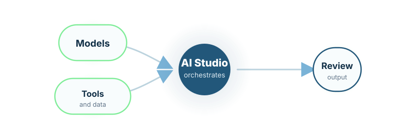

Agentic workflow execution
Models, tools, documents, data, and validation steps work together inside explicit control boundaries.
Controlled AI systems
Agentic AI infrastructure for research, pharma, and regulated enterprise workflows.
LydiaRX AI Studio helps organisations create, run, inspect, and validate AI-assisted workflows for automated R&D, regulated documentation, private AI deployments, scientific automation, and secure knowledge work.
LydiaRX AI Studio is an enterprise platform for controlled agentic workflows. It is designed for organisations that need more than a chatbot, a generic copilot, or isolated access to large language models.
The platform supports agentic harnesses in which models interact with tools, documents, datasets, APIs, memory, validation steps, governance policies, and human review inside explicit execution boundaries.

Models, tools, documents, data, and validation steps work together inside explicit control boundaries.
Repetitive scientific and technical work is accelerated without losing traceability or review.
Technical and scientific documents can be generated, compared, reviewed, and maintained more systematically.
Controlled model routing, access management, audit logging, and enterprise data protection remain built in.
Usage budgets, execution traces, evaluations, and evidence of execution stay inspectable.
Critical scientific, regulatory, and commercial decisions remain under accountable human supervision.
Evidence synthesis, protocol support, literature review, technical reporting, and data-analysis orchestration.
Research workbenches, model-informed analysis, cohort reasoning, and experiment planning.
AI-assisted coding, testing, documentation, architecture review, and workflow automation.
Private model use, audit trails, controlled document generation, and secure knowledge work.
Metadata validation, cohort workflows, AI-assisted reporting, and governed research collaboration.
LydiaRX AI Studio is designed for organisations that need AI systems to be inspectable, configurable, auditable, and useful inside real scientific and enterprise processes.
Request an AI Studio Discussion